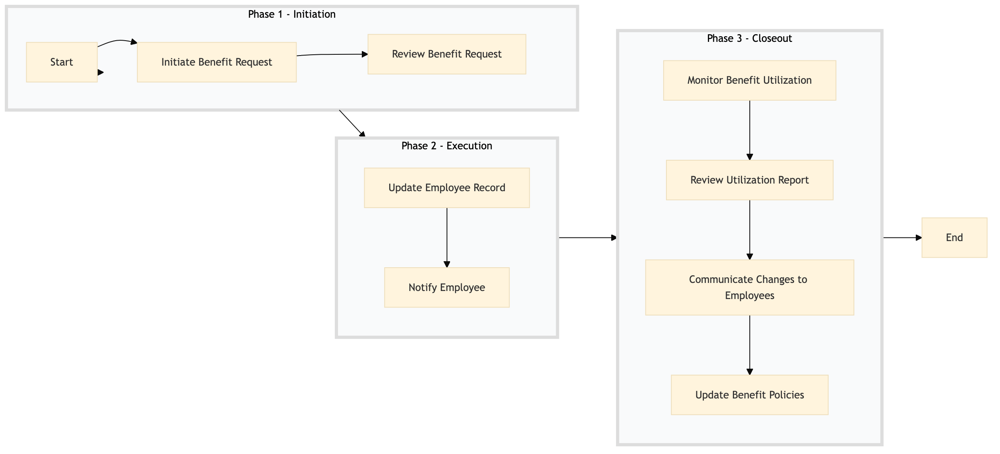

| Role | Steps |
|---|---|
| HR Manager | 1.1 1.2 2.2 3.2 3.3 |
| HR Analyst | 1.2 2.1 3.1 3.4 |
| Step | Name | Role | System | Input | Output | KPI | Dec? | Exc? | Pain Point / Risk |
|---|---|---|---|---|---|---|---|---|---|
| 1.1 | Initiate Benefit Request | HR Manager | Oracle OPERA Cloud | Employee benefit request form | Benefit request record in Oracle OPERA Cloud | Less than 5 minutes per request | N | Y | Handling complex benefit requests with multiple components |
| 1.2 | Review Benefit Request | HR Analyst | Oracle OPERA Cloud | Benefit request record in Oracle OPERA Cloud | Approved or rejected benefit request | Less than 10 minutes per review | Y | N | Ensuring compliance with all company policies and legal requirements |
| 2.1 | Update Employee Record | HR Analyst | Oracle OPERA Cloud | Approved benefit request | Updated employee record in Oracle OPERA Cloud | Less than 3 minutes per update | N | Y | Synchronization issues between different systems |
| 2.2 | Notify Employee | HR Manager | Oracle OPERA Cloud, Marriott Bonvoy CRM | Updated employee record in Oracle OPERA Cloud | Notification sent to employee | Less than 2 minutes per notification | N | Y | Ensuring timely and accurate communication |
| 3.1 | Monitor Benefit Utilization | HR Analyst | Oracle OPERA Cloud, IDeaS G3 RMS | Employee benefit records | Benefit utilization report | Less than 15 minutes per report generation | N | Y | Handling large volumes of data and ensuring accuracy |
| 3.2 | Review Utilization Report | HR Manager | Oracle OPERA Cloud, Microsoft Power BI | Benefit utilization report | Action plan for underutilized benefits | Less than 10 minutes per review | Y | N | Identifying areas for improvement and implementing changes |
| 3.3 | Communicate Changes to Employees | HR Manager | Oracle OPERA Cloud, Marriott Bonvoy CRM | Action plan for underutilized benefits | Communication sent to employees | Less than 5 minutes per communication | N | Y | Ensuring clear and effective communication |
| 3.4 | Update Benefit Policies | HR Analyst | Oracle OPERA Cloud, Workday HCM | Action plan for underutilized benefits | Updated benefit policies in Oracle OPERA Cloud and Workday HCM | Less than 20 minutes per update | N | Y | Maintaining consistency across different systems |
The HR-EW-06 process ensures that employee benefits and perks are administered efficiently at a Marriott full-service hotel, leveraging Oracle OPERA Cloud PMS and other key systems.